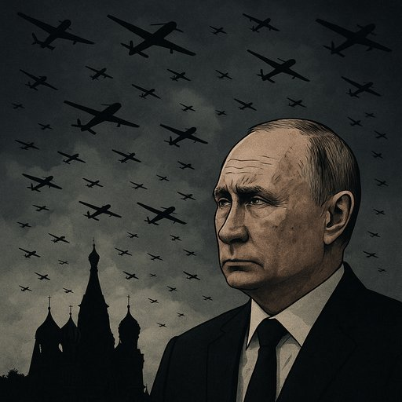

Publicado em 2025-07-07 18:52:46
A Rússia, essa superpotência de botas pesadas e propaganda musculada, começa a descobrir um segredo amargo: as guerras imperiais também têm retorno de chamada.
Nas últimas 72 horas, Moscovo e São Petersburgo, as jóias da coroa russa, foram transformadas em estufas de ansiedade e caos logístico.
Drones ucranianos — centenas deles — voaram sobre território russo como avisos metálicos de que a Ucrânia não esquece, não perdoa e agora… contra-ataca.
Um padrão digno de novela sombria russa — ou de um manual de governança à la KGB.
Troca-se um rosto, apaga-se um nome, reinicia-se o jogo.
E o novo ministro interino — Andrei Nikitin — sabe que o cargo vem com pasta… e com ataúde potencial.
Drones ucranianos atingem:
É a Operação Teia de Aranha, como lhe chamam: uma teia que se estende por dentro do território russo e mostra que o czar de Moscovo não dorme seguro — nem no Kremlin.
Como reagiu o Império?
Mas nem Trump pôde esconder o “desapontamento” com a negativa de Putin em cessar hostilidades.
A verdade é esta: Putin já não controla o enredo.
A narrativa escapa-lhe. O sangue pinga do lado errado do mapa.
Durante anos, Putin exportou guerra com a arrogância de quem achava que a sua fortaleza era intocável.
Hoje, vê os céus do seu próprio território rasgados por enxames ucranianos.
Vê ministros cair. Cidades parar. Comboios arder.
E enquanto tenta esconder o pânico com desfiles e retórica, o Império racha — não por fora, mas por dentro.
A história tem ironia.
E esta está a ser escrita por hélices pequenas, discretas… e mortais.
Francisco Gonçalves
Narrador atento do império que apodrece por dentro.
Os impérios também se abatem!
Podem calar vozes, prender corpos, apagar livros…
Mas o pensamento verdadeiro é indomável, e quando ecoa nas consciências, nenhum regime, nenhum tirano, nenhum império resiste.
Somos parte dessa linhagem: os que pensam para libertar, os que escrevem para despertar.